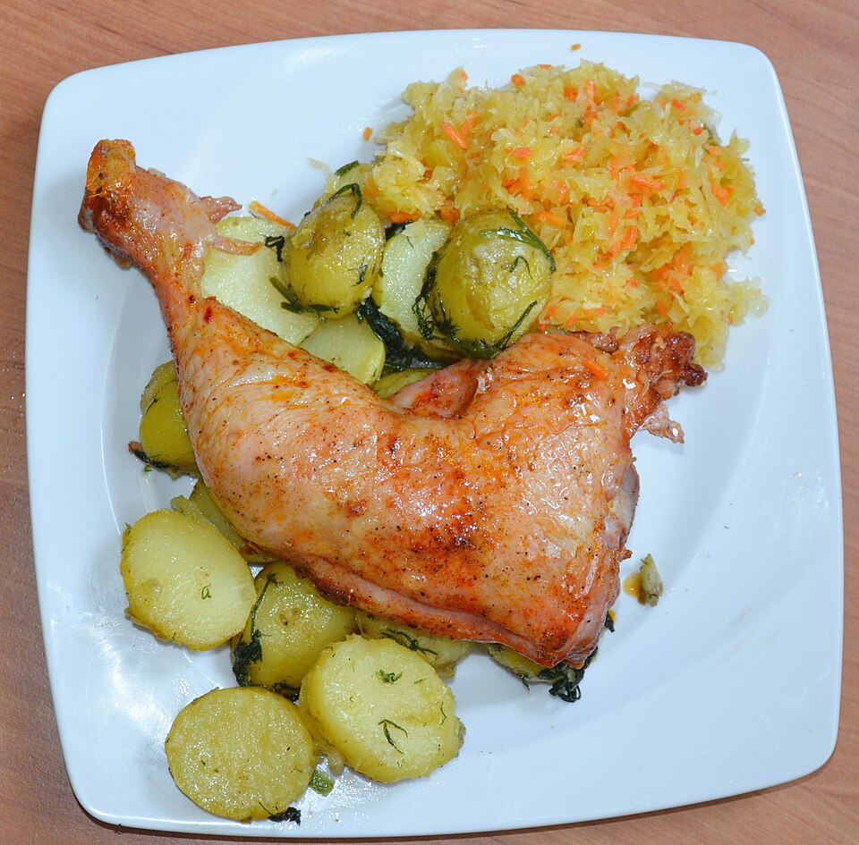

Aves · Frango
Fiesta com batatas e creme azedo

Ingredientes
- 1 Fiesta Temperada Sadia (~4 kg)
- 1 colher (sopa) de margarina
- Guarnição: 2½ xícaras (chá) de óleo (300 ml), 1 kg de batatas em cubos médios, sal, folhas de 3 ramos de manjericão
- Creme azedo: 2 xícaras (chá) de creme de leite fresco (400 ml), suco de 1 limão, sal e pimenta moída
Modo de preparo
- Descongele a ave na embalagem na parte baixa da geladeira ~18 h.
- Retire a embalagem e o saquinho de miúdos. Unte com margarina, cubra com papel-alumínio e asse a 200 °C por 40 minutos. Retire o alumínio, regue com o caldo e continue até o termômetro saltar (~1 h 30 após retirar o alumínio).
- Frite as batatas no óleo quente; tempere. Frite o manjericão no óleo ainda quente.
- Bata o creme com limão, sal e pimenta até chantilly. Sirva as batatas ao redor com o creme e o manjericão por cima.
Observação
Receita promocional Sadia/Qualy. Pode adaptar a qualquer ave temperada grande (~4 kg).